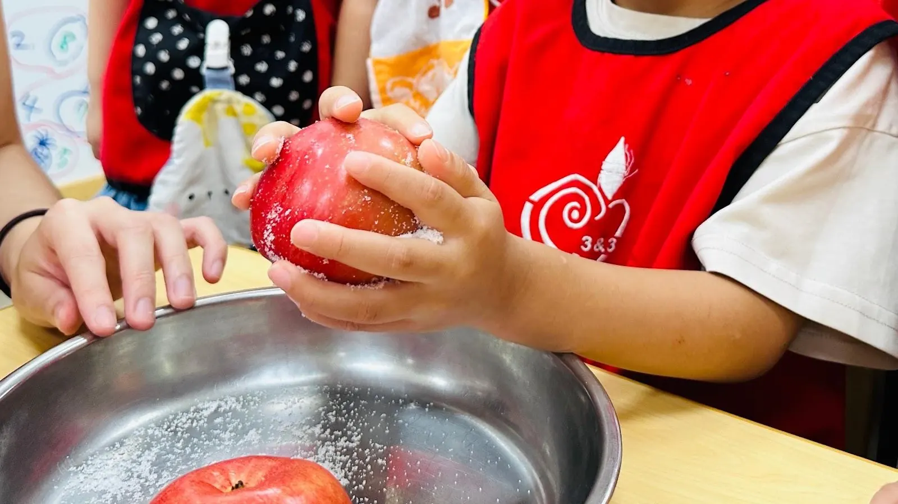
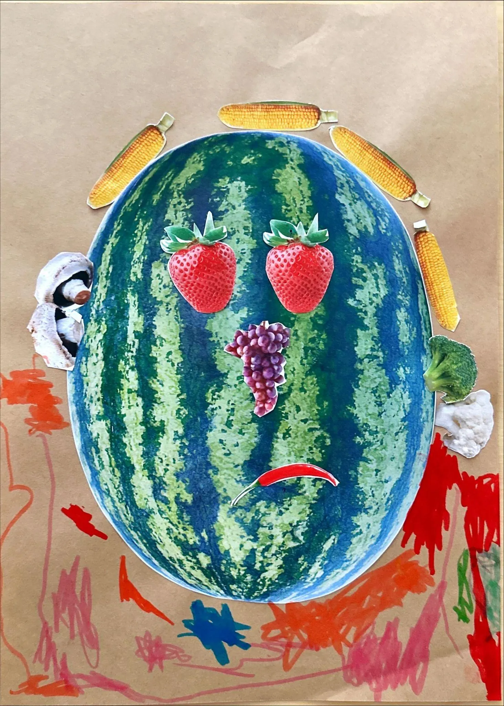
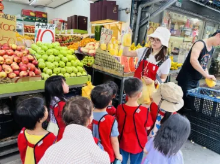
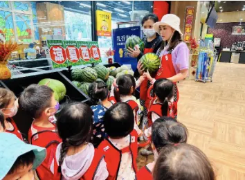
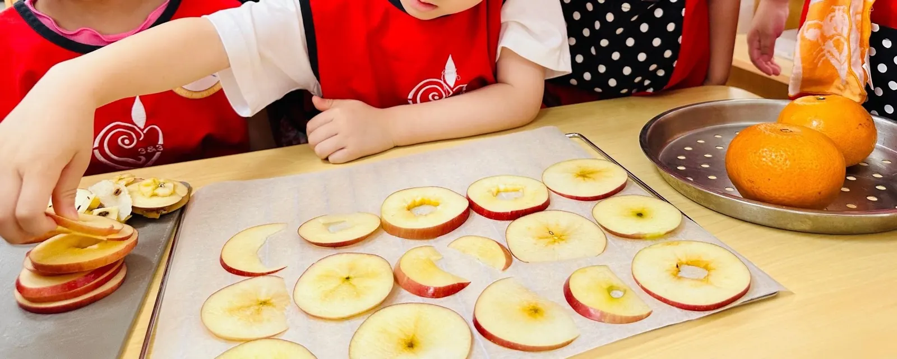
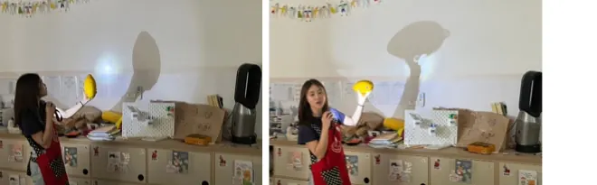
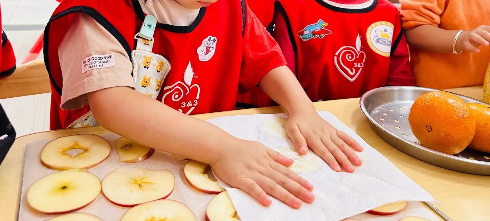
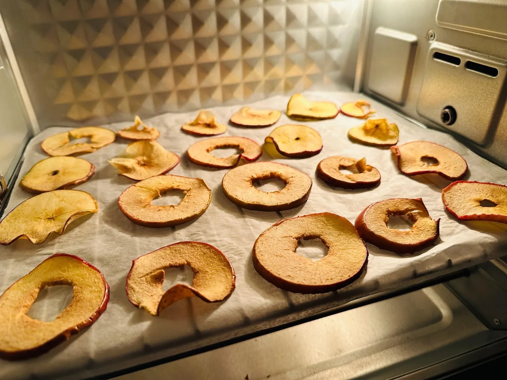
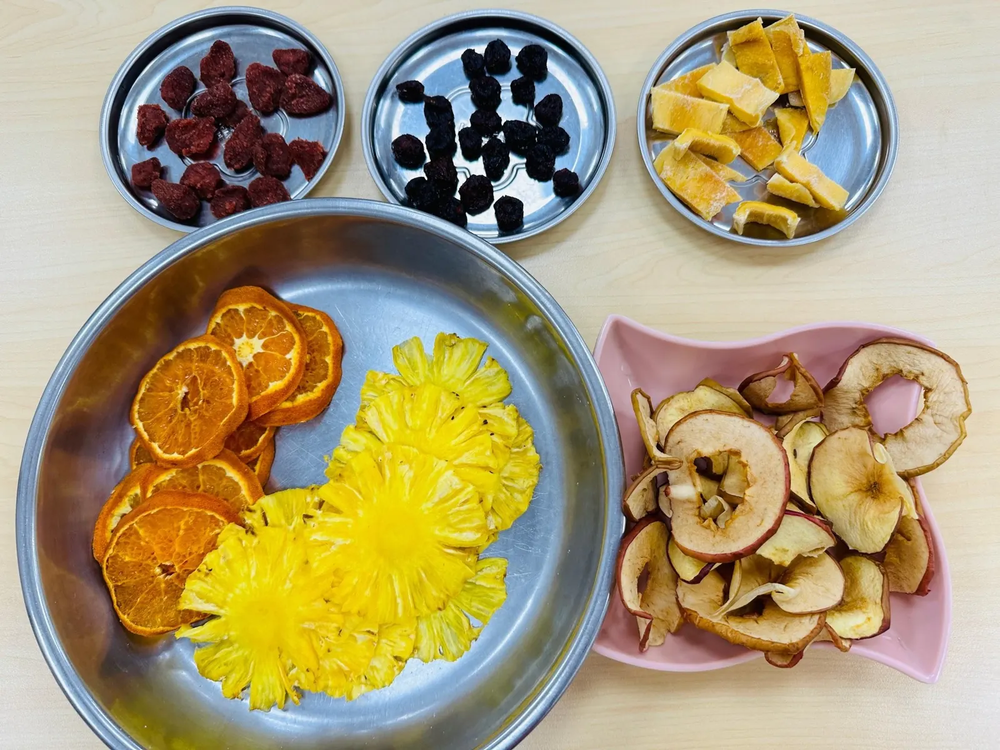

CURRICULUM STORY · MIXED-AGE CLASSROOM · AGES 2–6
How Do We Know a Fruit?
Selected moments from a six-month classroom theme, showing how very young children encountered fruit through everyday experience, community exploration, sensory investigation and making.
← Back to selected work
CONTEXT
Four documented periods within a longer theme.
This theme took place in a mixed-age classroom of 20 children aged two to six, with most children between approximately two-and-a-half and three-and-a-half years old.
The fruit theme continued for approximately six months and was developed within a Mandarin-medium co-teaching setting. This is not a complete chronological account of the semester. It brings together four documented periods that I designed and led.
ONE THEME, MANY WAYS OF LEARNING
One theme, many ways of learning.
For very young children, learning does not need to end with every child giving a complete explanation or reaching the same conclusion.
While their experience of the world is still expanding, I look for beginnings: noticing something previously overlooked, becoming willing to explore, connecting a discovery with familiar life, or recognising and sharing an idea during a later encounter.
I therefore allowed the idea of fruit to reappear in different forms—through stories and conversation, real objects, touch and taste, sorting and comparison, community visits, maps and images, light and shadow, and practical making.
The aim was not for children to master a complete body of knowledge immediately. It was to build a rich foundation for future curiosity, comparison, questioning and conceptual understanding.
01
NOTICING AND COMPARING
Bringing everyday criteria into view.
The theme began with a seemingly simple question:
Is a tomato a fruit or a vegetable?
Children drew on their everyday experiences and suggested different criteria, including size, stems, seeds, leaves, taste, and whether a food was normally cooked or eaten raw.
I introduced different tomatoes for the children to observe, handle and taste. They were invited to compare what they noticed and communicate their ideas in ways appropriate to their age.
The value of the experience was not in requiring every child to arrive at one answer. It was in helping them attend to observable features, begin making comparisons and bring their existing knowledge into the discussion.

02
FINDING FRUIT IN THE COMMUNITY
Letting children’s local knowledge change the route.
As children became more attentive to fruit in daily life, we extended the theme beyond the classroom:
Where can we find fruit in our community?
Children recalled fruit shops, supermarkets, convenience stores and markets they had noticed during previous walks. They helped discuss and vote on a route for a community visit.
When one child pointed out that a newly opened supermarket also sold fruit, I revised the original plan and divided the visit across two days.
Different groups contributed by photographing shopfronts, identifying locations, drawing symbols and assembling a shared community fruit map.




After the visit, older children translated remembered places into symbols for a shared community fruit map.
03
EXPLORING THROUGH THE SENSES
Before an adult method, time to handle and suggest.
Following the community visits, we selected fruits that children rarely encountered or knew by name but had not previously tasted.
In mixed-age groups, children handled, smelled and observed the fruits. They considered whether each fruit might need to be cut, peeled, opened by hand or approached in another way. Each group shared a suggestion before I tested the proposed method where possible.
Once the fruits were opened, the children examined the skin, flesh and seeds. During tasting, some moved beyond stating whether they liked a fruit and began referring to sweetness, sourness and texture when explaining their responses.
We also explored fruit through light and shadow. As the fruits were viewed from different angles, their shadows became rockets, boats, snails or instruments in the children’s imaginations. The same material offered another way to observe, associate and express.


04
LEARNING THROUGH MAKING
Following change through a practical process.
In a later documented experience, the children watched several demonstrations of dried-fruit preparation and looked for steps that appeared repeatedly.
Together, we organised the process, proposed fruits to use and voted on the final selection. The children then participated in purchasing, washing, drying, preparing and arranging the fruit.
Afterwards, they compared fresh fruit, homemade dried fruit and commercially prepared dried fruit. They noticed that slices had become flatter or more irregular and that their colour and texture had changed.
These observations do not demonstrate that every child developed a scientific understanding of dehydration. They show examples of children beginning to attend to how materials can change during a process.



DESIGNING PARTICIPATION ACROSS AGES
Different ways into the same theme.
In a classroom spanning ages two to six, the challenge was not to require every child to complete the same task. It was to provide different ways of entering the same theme.
Younger children could participate through touching, tasting, pointing, matching, choosing and imitation. Children ready for further complexity could explain a reason, use images and symbols to record information, organise a sequence or contribute more developed ideas during group discussion.
Learning areas also provided additional challenge for older children or those ready to extend an idea. This story focuses only on the group experiences supported by the available documentation.
WHEN CLASSROOM LEARNING RETURNED TO EVERYDAY LIFE
Recognition in another context.
Everyday experience was not only the starting point of the theme. It was also where children began using their learning again.
During classroom conversations, children shared memories of eating particular fruits at home, shopping for fruit with family members, and recognising familiar shapes, colours or flavours. These contributions connected new encounters with knowledge that already mattered to them.
Some parents later reported that their children identified fruits encountered at school when they appeared at home or during weekend activities. During visits to fruit shops, some children also began naming or introducing fruits they recognised to family members.
These reports do not represent a uniform outcome for every child. They suggest that, for some children, classroom experiences had become available for noticing, recognition and communication in new contexts.
WHAT THE DOCUMENTATION SHOWS
Small signs of emerging understanding.
Across these selected experiences, records show examples of children beginning to:
- notice and compare the appearance, taste, texture and internal structure of fruit;
- draw on everyday experience when participating in classification and discussion;
- recognise places connected with fruit in their community;
- explore one theme through touch, smell, taste, images, play and making;
- share and exchange ideas with children of different ages;
- recognise classroom experiences again in family and community life; and
- express emerging understanding through actions, choices, brief language and visual representation.
These were not uniform conclusions that every child was expected to reach. They offered clues about what individual children were beginning to notice and where another learning invitation might begin.
TEACHER REFLECTION
Making room for more than one system of knowing.
Looking back, I would approach the tomato discussion with greater care.
At the time, the group eventually used familiar cooking and eating practices as a basis for classification. If I revisited the experience, I would avoid resolving the question through one rule and instead make visible how different systems of classification can sometimes produce different answers.
I would also extend the dried-fruit experience by documenting weight, slice thickness, time or visible moisture before and after drying. This would make the transformation easier for children to compare and revisit.
These early classroom experiences helped shape an approach I later developed more deliberately through curriculum and STEAM design: beginning with children’s limited but meaningful experience, noticing the small questions that emerge, and allowing an idea to return through questions, environment, play and multisensory encounters.
At this stage, the purpose is not to hurry children towards an adult conclusion. It is to give curiosity somewhere to begin and to build the experiential foundation from which deeper exploration may later grow.